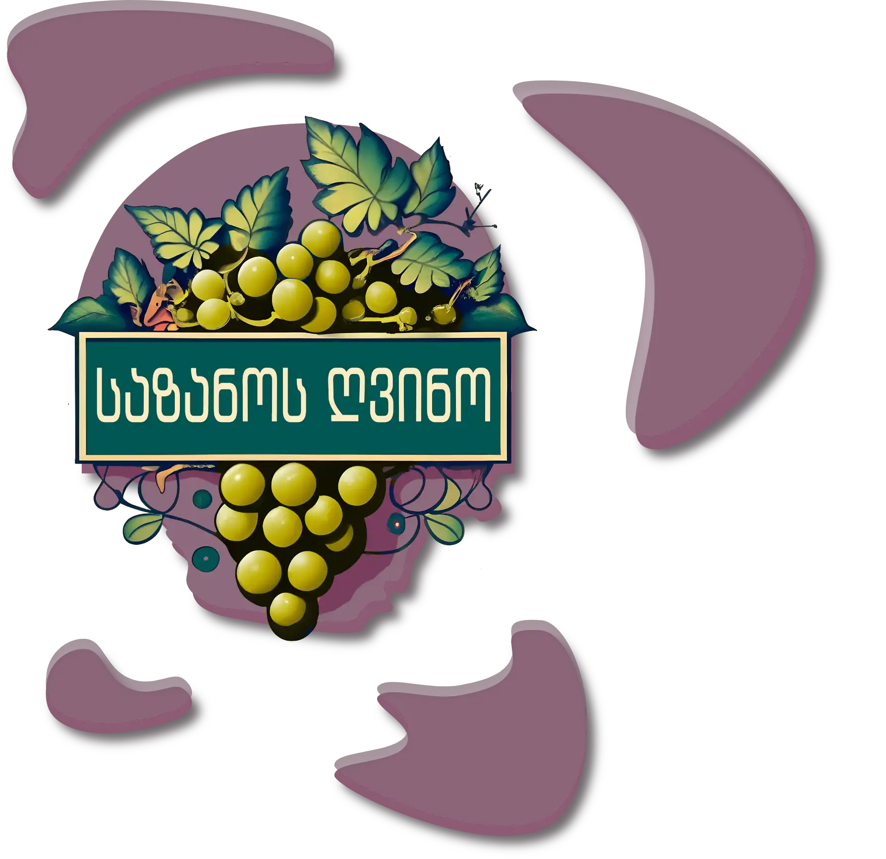
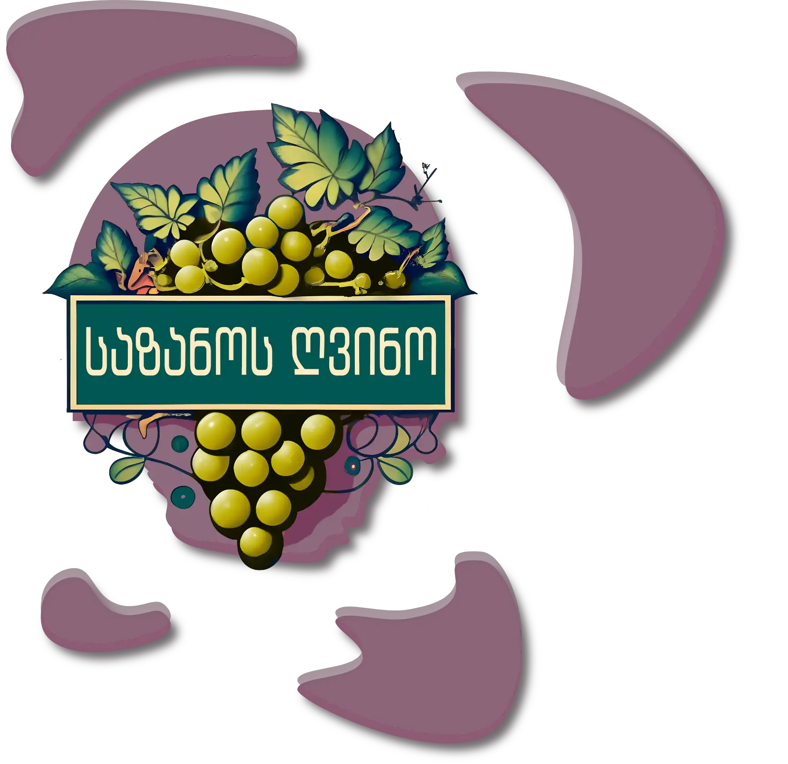

„საზანოს ღვინო“ 2017 წელს დაარსდა. იგი ცნობილია თავისი მეღვინეობით, კომფორტული და გამორჩეული სასტუმრო კომპლექსითა და უგემრიელესი სამზარეულოთი, რომელთაც წლების განმავლობაში არაერთი სტუმრის მოწონება დაუმსახურებიათ.
 
